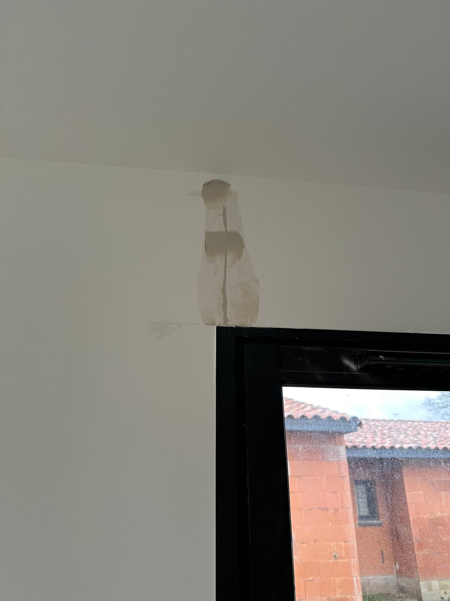
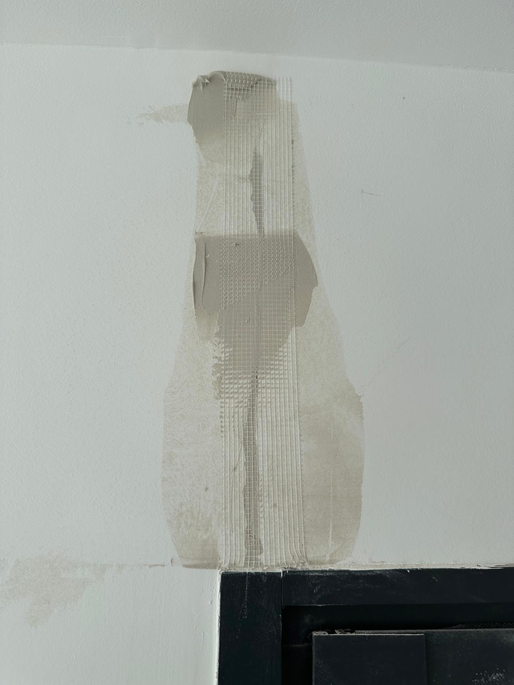
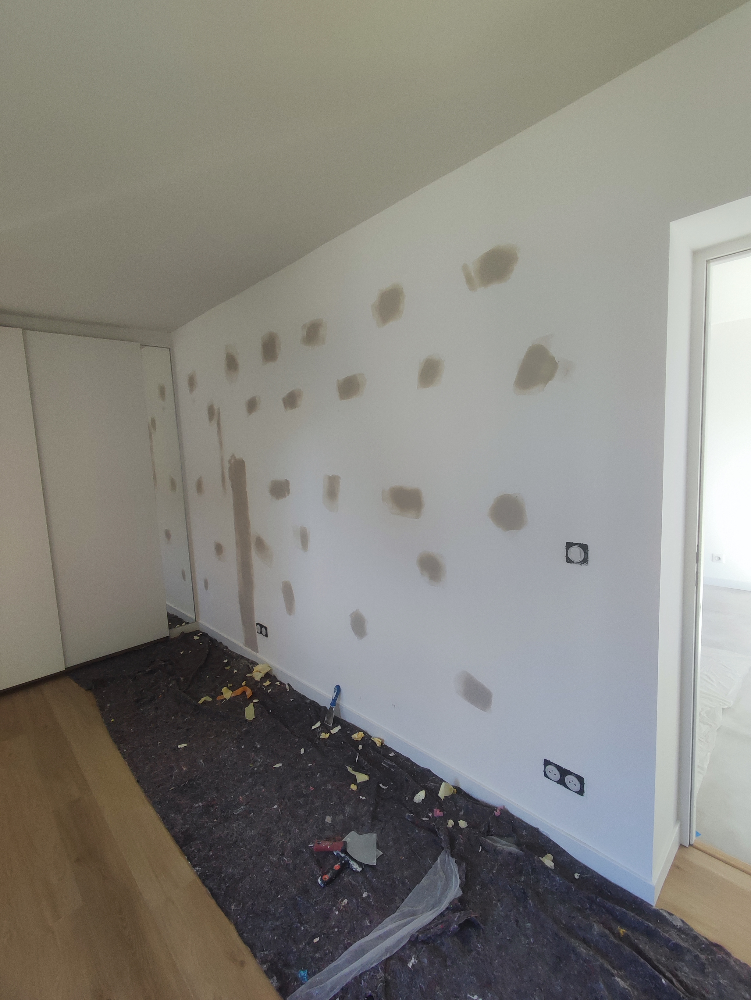

Stopper définitivement les fissures avant qu’elles ne s’aggravent
Dans la région de Montpellier, Nîmes et Béziers, les sols argileux, les variations de température estivales et les mouvements naturels des bâtiments provoquent fréquemment des fissures sur les cloisons intérieures, les plafonds ou les façades extérieures.
Se contenter de boucher superficiellement une fissure avec un peu d’enduit ordinaire ne règle jamais le problème : elle se rouvre dès la saison suivante. Peinture créa & finition applique des protocoles de réparation armés pour consolider le support et restituer un aspect parfaitement uniforme.
Distinction entre microfissure de surface, fissure de jonction placo/maçonnerie ou fissure extérieure exposée.
Élargissement propre de la fissure, brossage/dépoussiérage complet et application d’un durcisseur ou fixateur.
Garnissage à l’enduit fibré ou mastic élastomère, complété par bande calicot ou toile de verre anti-fissuration.
Lissage large, ponçage soigné et remise en peinture assortie à l’existant sur mur, plafond ou façade.



Nos réalisations en traitement de fissures


Nos solutions de traitement de fissures
- Reprise de fissures sur murs et plafonds intérieurs : jonctions entre plaques de plâtre, angles, tours de fenêtres et linteaux.
- Pose de toile de verre lisse ou armée : pontage global des murs faïencés ou microfissurés avant mise en peinture.
- Traitement des fissures extérieures et façades : ouverture, garnissage au mastic polyuréthane/acrylique souple et revêtement élastique.
- Réparation après mouvements ou sécheresse : consolidation des angles et reprise d’enduit taloché ou lissé.
- Mise en peinture complète après séchage : restitution homogène sans trace de réparation.
Pourquoi une fissure traitée à la légère finit toujours par revenir ?
Un mur soumis à de légères dilatations thermiques exerce une traction constante sur le joint réparé. Sans ouverture préalable permettant à l’enduit de pénétrer en profondeur et sans armature souple (bande fibre ou toile de verre) pour répartir la tension, la peinture finit par casser au même endroit.
En combinant préparation mécanique, produit adapté à l’élasticité requise et primaire d’accrochage, nous prolongeons considérablement la tenue de vos murs et façades.
Conseil préventif : En façade, une fissure supérieure à 0,2 mm laisse pénétrer l’eau de pluie dans la maçonnerie. La traiter rapidement vous évite des dégâts intérieurs et des travaux beaucoup plus coûteux.
Questions fréquentes
Peut-on repeindre une pièce entière après avoir repris seulement deux ou trois fissures ?
Oui. Une fois les fissures traitées, poncées et recouvertes d’une sous-couche d’impression, nous appliquons la peinture sur le pan de mur ou la pièce entière pour un rendu parfaitement homogène.
Quelle est la différence entre un enduit classique et un enduit fibré / mastic élastique ?
L’enduit fibré contient des fibres de renfort qui résistent à la fissuration, tandis que le mastic élastomère absorbe les légers mouvements de dilatation, notamment en façade.
Intervenez-vous aussi pour des fissures apparues après un dégât des eaux ?
Oui, nous traitons à la fois les fissures liées au travail du bâti et les dégradations consécutives à l’humidité ou à un sinistre.